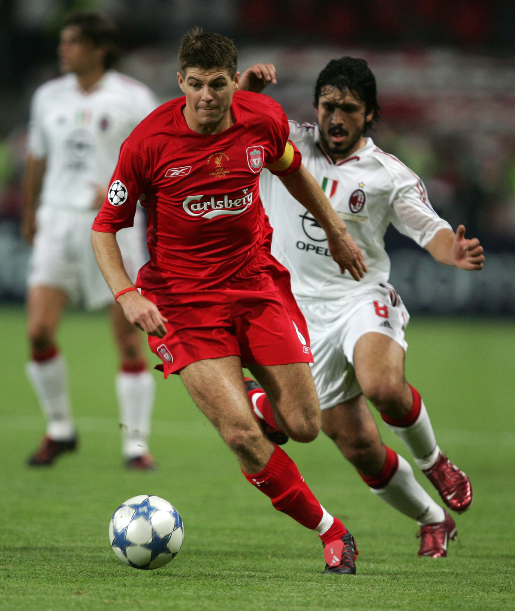
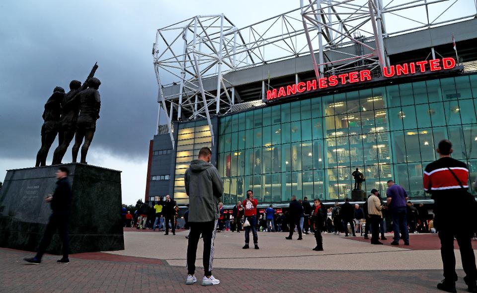

- 

-  <
I love playing Sport.My favourite sports are soccer and hurling. I play soccer for Liverpool FC and hurling with Armagh GAA club
In 2018 I won the Ulster championship with Armagh in hurling. My favourite soccer player is Steven Gerrard.He captained Liverpool
for 10 years. I also have great interest in tennis as I find it the most phsyically demanding sport to play. Its really fun and is
really good for my fitness.
I also love to travel by the age of 19 I have been to over 10 different countries including the likes of France, Italy, Germany,
and Spain. Ive seen lots of amazing things including the Leaning tower of Piza and Arc de Triomphe. In the next few years I aspire
to do interailing so I can see most of the continent.